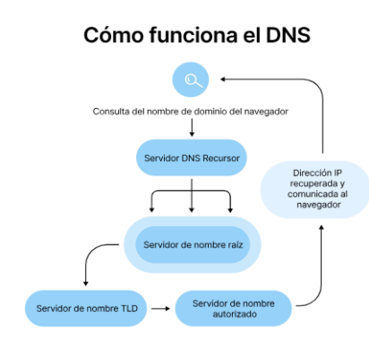
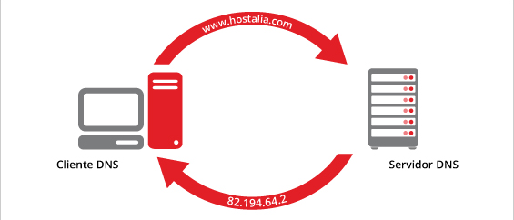
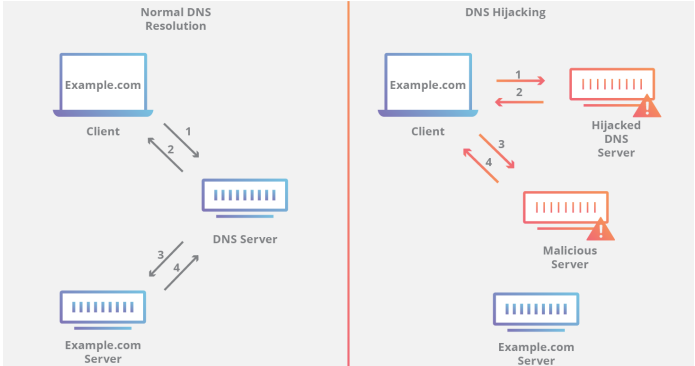

|
Todos los dispositivos conectados a Internet, desde teléfonos inteligentes y portátiles hasta servidores que alojan sitios web de comercio electrónico, se buscan y comunican entre sí utilizando números conocidos como direcciones IP. Sin embargo, en lugar de recordar e ingresar un número largo, puedes simplemente escribir un nombre de dominio, como ejemplo.com, en tu navegador web. El DNS (Sistema de Nombres de Dominio) es el sistema que traduce esos nombres de dominio en direcciones IP, permitiéndote acceder al sitio web correcto de manera fácil y rápida. |
|
El propósito de los servidores DNS es hacer que este proceso no suponga problemas para los usuarios, al tiempo que brinda capacidad para un gran volumen de tráfico, cambiando nombres de dominio y direcciones IP. El proceso de resolución de DNS depende de variables, tales como el equilibrio de carga, la ubicación del servidor y del usuario y la intensidad de la conexión a Internet. |
|
El proceso de solución de DNS supone convertir un nombre de servidor (como www.example.com) en una dirección IP compatible con el ordenador (como 192.168.1.1). Se da una dirección IP a cada dispositivo en Internet, y esa dirección será necesaria para encontrar el dispositivo apropiado de Internet, al igual que se usa la dirección de una calle para encontrar una casa concreta. Cuando un usuario quiere cargar una página, se debe traducir lo que el usuario escribe en su navegador web (example.com) a una dirección que el ordenador pueda entender para poder localizar la página web de example.com.  |
|
Los registros DNS (también conocidos como archivos de zona) son instrucciones radicadas en servidores DNS autoritativos que proporcionan información sobre un dominio, como la dirección IP asociada con este y cómo gestionar solicitudes dirigidas a dicho dominio. Estos registros consisten en una serie de archivos de texto escritos en lo que se conoce como sintaxis DNS. La sintaxis DNS es simplemente una cadena de caracteres utilizados como comandos que dicen al servidor DNS qué hacer. Todos los registros DNS tienen también un "TTL", que quiere decir "time-to-live" e indica con qué frecuencia el servidor DNS actualizará ese registro. |
|
Registro A: registro que contiene la dirección IP de un dominio. Registro AAAA: El registro que contiene la dirección IPv6 de un dominio (a diferencia de los registros A, que enumeran la dirección IPv4). Registro CNAME: reenvía un dominio o subdominio a otro dominio, NO proporciona una dirección IP. Registro MX: dirige el correo a un servidor de correo electrónico Registro TXT: Permite que un administrador pueda almacenar notas de texto en el registro. Estos registros se suelen utilizar para la seguridad del correo electrónico. Registro NS: almacena el servidor de nombres para una entrada DNS. Registro SOA: almacena la información del administrador sobre un dominio. Registro SRV: especifica un puerto para servicios específicos Registro PTR: proporciona un nombre de dominio en búsquedas inversas. |
|
Recursor de DNS: es como un bibliotecario al que se le pide que busque un libro determinado en la biblioteca. El recursor DNS es un servidor diseñado para recibir consultas desde equipos cliente mediante aplicaciones como navegadores web. Normalmente, el recursor será el responsable de hacer solicitudes adicionales para satisfacer la consulta de DNS del cliente. Servidor de nombres raíz: es el primer paso para traducir (solucionar) los nombres de servidor legibles en direcciones IP. Se puede comparar a un índice en una biblioteca que apunta a diferentes estanterías de libros. Generalmente sirve como referencia de otras ubicaciones más específicas. Servidor de nombres TLD: el servidor de dominio de nivel superior (TLD) se puede comparar con una estantería de libros en una biblioteca. Es el paso siguiente en la búsqueda de una dirección IP específica y aloja la última parte de un nombre de servidor (en example.com, el servidor TLD es "com"). Servidor de nombres autoritativo: se puede interpretar como un diccionario en una estantería de libros, en el que se puede consultar la definición de un nombre específico. El servidor de nombres autoritativo es la última parada en la consulta del servidor de nombres. Si cuenta con acceso al registro solicitado, devolverá la dirección IP del nombre del servidor solicitado al recursor de DNS (el bibliotecario) que hizo la solicitud inicial.  |
|
Suplantación de DNS/envenenamiento de caché: es un ataque en el que se introducen datos DNS falsificados en el caché del solucionador de DNS, lo cual provoca que el solucionador devuelva una dirección IP incorrecta para un dominio. En vez de ir al sitio web correcto, se puede desviar el tráfico a un equipo malicioso o a cualquier lugar que quiera el atacante, a menudo a una réplica del sitio original usada con fines maliciosos, tales como distribuir malware o recopilar información de inicio de sesión. Túnel de DNS: este ataque usa otros protocolos para transmitir consultas y respuestas DNS a través de un túnel. Los atacantes pueden utilizar SSH, TCP o HTTP para pasar malware o información robada a consultas DNS, sin que los detecten la mayoría de firewalls. Secuestro de DNS: en un secuestro de DNS, el atacante redirige las consultas a un servidor de nombres de dominio diferente. Se puede llevar a cabo con malware o con una modificación no autorizada de un servidor DNS. Aunque el resultado es similar al de la falsificación de DNS, es un ataque esencialmente diferente, ya que ataca el registro DNS del sitio web en el servidor de nombres, en vez de la caché de un solucionador. Ataque NXDOMAIN: es un tipo de ataque de inundación de DNS en el que un atacante inunda un servidor DNS con solicitudes de registros que no existen, para causar una denegación de servicio para el tráfico legítimo. Se puede conseguir con herramientas de ataque sofisticadas que pueden generar de forma automática subdominios únicos para cada solicitud. Los ataques de NXDOMAIN también pueden dirigirse contra un solucionador recursivo con el objetivo de llenar la caché del solucionador con solicitudes basura. Ataque de dominio fantasma: un ataque de dominio fantasma da un resultado similar al de un ataque NXDOMAIN en una resolución DNS. El atacante configura una serie de servidores de dominio "fantasmas" que o bien responden a las solicitudes muy despacio o no responden en absoluto. Después, el solucionador recibe una avalancha de solicitudes a estos dominios y se queda inmovilizado esperando respuestas, con la consecuencia de un rendimiento ralentizado y la denegación de servicio. Ataque de subdominio aleatorio: en este caso, el atacante envía consultas DNS a varios subdominios aleatorios e inexistentes de un sitio legítimo. Su objetivo es crear una denegación de servicio para el servidor de nombres autoritativo del dominio, haciendo que sea imposible buscar el sitio web desde el servidor de nombres. Como efecto colateral, el ISP del atacante también puede verse afectado, ya que la caché de su solucionador recursivo se cargará con solicitudes perjudiciales. Ataque de bloqueo de dominio: los atacantes orquestan esta forma de ataque configurando dominios especiales y solucionadores para crear conexiones TCP con otros solucionadores legítimos. Cuando los solucionadores atacados envían solicitudes, estos dominios devuelven flujos lentos de paquetes aleatorios, que inmovilizan los recursos del solucionador. Ataque CPE basado en red de robots (botnet): estos ataques se realizan usando dispositivos CPE (equipos locales del cliente, hardware otorgado por los proveedores de servicios para que lo usen sus clientes, como módems, enrutadores, cajas de cables, etc.). Los atacantes ponen en riesgo a los CPE y los dispositivos se convierten en parte de una red de robots (botnet), que se utiliza para llevar a cabo ataques de subdominio aleatorios contra un sitio o un dominio.  |
© Copyright 2024. Itzel Guadalupe Jiménez Gómez